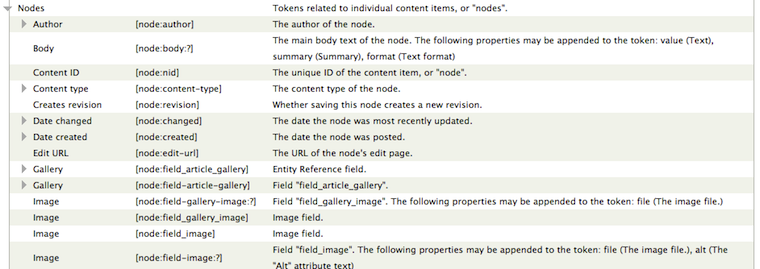
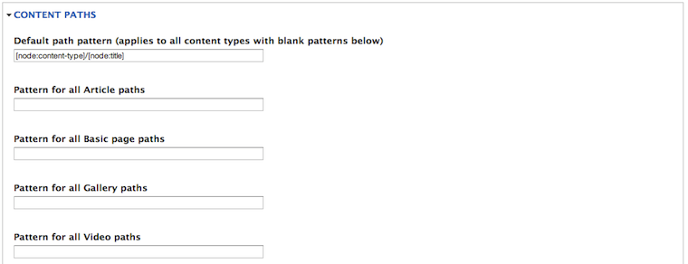

About me

Jesús Manuel Olivas
@jmolivas | http://jmolivas.com
What is this talk about?
When you first enter in the world of Drupal you have no idea of the "Drupal way" and chance are you are going to have a hard time building websites.
This session is an overview of modules that may be used to build sites extending the functionality of a vanilla Drupal installation (Article, Basic Pages and a contact form).
WAT

Drupal = multipurpose CMS/CMF
- High learning curve.
- Few modules on Drupal core installation.
- Lacking uniformity on GUI.
- Compatibility between new versions.
- The Drupal way (NIH symdrome).

And then...
It is like a compilation of modules (ModuleMonday of Lullabot + other sites), to help you build a Drupal, making it clear that a larger number of modules used can affect site performance.
Where do I search for modules?
- Official site
- IRC #drupal
- User groups
- Module Monday, Code karate, WebOmelette
What @eaton & @lullabot said

I found the one I love & now what?
- Verify status (Maintenance & Development)
- Review Issues & Bug report
- Verify activity

Administration
Drush
Drush is a command line shell and scripting interface for Drupal.
- The Drush Project Manager allows you to download, enable, disable, uninstall, update modules/themes/profiles/translations from the command line examples: $drush dl [module-name] and drush en -y [module-name] in a Drupal directory to install a Module. Also allows you to update all your modules and even Drupal core with just one command $drush up --no-core & $drush up drupal.
- Admin tasks. run cron, clear cache.
- Databse interaction. Allow importr/export site and database.
pear channel-discover pear.drush.org
pear install drush/drush
Quickstart
A pre-packaged downloadable PHP/LAMP Development Environment for Drupal.
- Support Drupal 7 & Drupal 6
- Ubuntu Linux, Apache, MySQL, APC, XDebug, IMAP, UploadProgress
- Drush, drush make.
- Netbeans and Eclipse, pre-configured.
Devel
Helper functions for Drupal developers and admins allows between many things:
- This module can print a summary of all database queries for each page request at the bottom of each page.
- Generate content: Accelerate development of your site or module by quickly generating nodes, comments, terms, users, and more.
Administration menu
Provides a theme-independent administration interface.

Module filter
Add an input to search modules via JS without having to rely on the browsers search feature. Show every module alphabetically. When tabs is enabled, provides a tab for each package group.

Sitebuilding
Entity and Fields
The Content Construction Kit allows you to add custom fields to nodes using a web browser.

Taxonomy
Taxonomy, a powerful core module, gives your sites use of the organizational keywords known in other systems as categories, tags, or metadata

Node Queue
The Nodequeue module allows users to collect nodes in an arbitrarily ordered list. Provides an excelent integration with Views.

Bundle Copy
Has export/import support for content types and fields

Entity Reference
Provides a field type that can reference arbitrary entities really useful when creatiung complex data structures.

References Dialog
Extends reference fields by adding links to add, edit and search for references through a dialog.

Rabbit Hole
Adds the ability to control what should happen when en entity is being viewed at its own page.

Token
Tokens are small bits of text that can be placed into larger documents via simple placeholders.

Pathauto
Automagically generates URL/path aliases for entities (nodes, taxonomy terms, users) without requiring the user to manually specify the path alias. This allows you to have URL aliases like /article/my-article-title instead of /node/123.

Token Formatters
Provides additional token-izable field formatters. This allows you to easily and fully customize how fields are output.

Views
Powerful query builder for Drupal. It's a module that lets you fetch content from the database and present it to the user in ways tailored to your needs: lists, posts, galleries, reports, forum posts. While the learning curve is steeper than in some other modules that do this, Views makes up for it by giving you the freedom to use any terms you want.
Views Slideshow
Views Slideshow can be used to create a slideshow of any content (not just images) that can appear in a View. Powered by jQuery, it is heavily customizable: you may choose slideshow settings for each View you create
RSS Field Formatters
Provides field formatters for node RSS view mode:
- Category: element for taxonomy term reference fields;
- Enclosure: element for file, image and media fields (RSS enclosures are the method used to publish MP3 files in a podcast feed);

Text Formatters
This module provides a field display formatter to render field values as HTML or comma-separated lists.
For multi-value fields, each field value becomes a list item.

Interaction
Webform
Webform is the module for making surveys in Drupal. After a submission, users may be sent an e-mail "receipt" as well as sending a notification to administrators.

Client side validation
This module adds clientside validation (aka "Ajax form validation") for all forms and webforms using jquery.validate.

Disqus
Comments platform that helps you build an active community from your website's audience.

Follow
Follow adds sitewide and per user links that link to various social networking sites.

Social network
- Easy Social
- Social Share
- Service links
- Share Buttons (AddToAny)
- ShareThis
- SexyBookmarks
Sitebuilding
Also
RWD (Responsive Web Design)
RWD modules:
Imágenes : Client-side adaptive image
http://drupal.org/project/cs_adaptive_imageImágenes : Picture
http://drupal.org/project/pictureVideos : FitVids
http://drupal.org/project/fitvidsVideos : Slider
http://drupal.org/project/flexsliderReferences
Slides maded with kinout
kinout on github
Fonts Bitter & Open Sans
Open Sans at google webfont directory
Bitter at google webfont directory
Thanks
Sitebuilder guide to survive in a back-end Developer world - SANDCamp January 2013
Jesús Manuel Olivas | @jmolivas | http://jmolivas.com